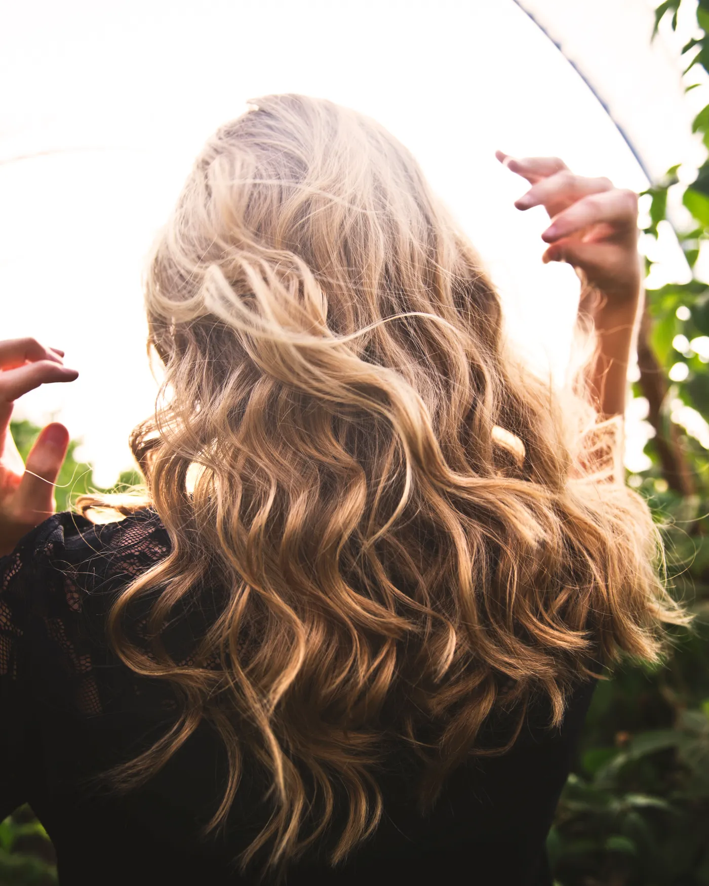
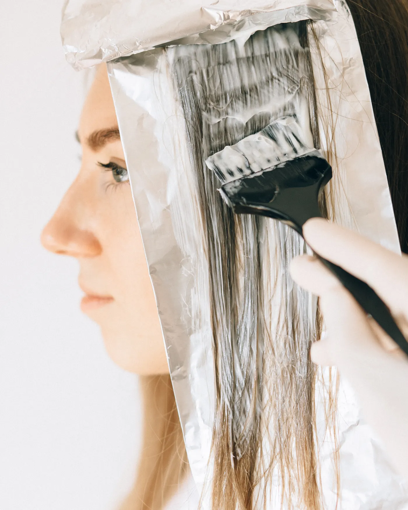
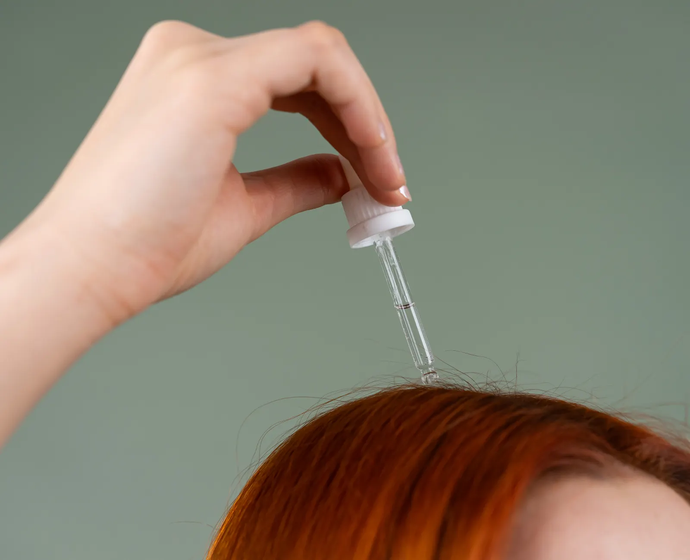
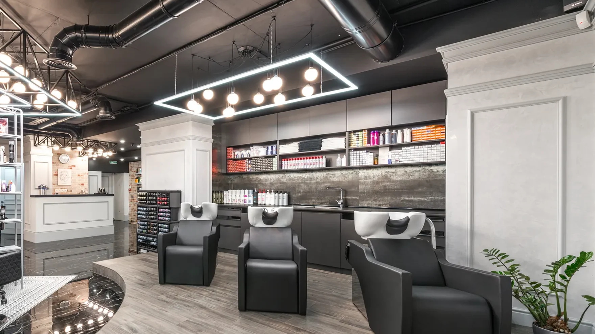

Estética y peluquería · Escobar
Rubios que salen del tono que pediste
Trabajamos el color por altura de tono: te decimos hasta dónde llega tu pelo hoy y en cuántas sesiones. Y en la misma visita resolvés peluquería, manos, pies y depilación.
- Color y rubios
- Tratamientos sin formol
- Manos, pies y depilación


01 Rubios y color
El rubio no es un color: es una altura a la que tu pelo puede llegar
Cada cabello arranca de una altura y aguanta cierta cantidad de aclarado por sesión. Por eso lo primero que hacemos es leer de dónde salís: si venís de tintura, si hubo decoloración antes y cómo está el largo. Recién ahí se decide la técnica.
- De dónde salís. La altura real de tu raíz y la del largo casi nunca son la misma.
- Qué hay depositado. Una tintura de kit se saca antes de aclarar, no al mismo tiempo.
- Cuánto aguanta. Si el salto es grande, se hace en dos visitas y el pelo llega entero.
Todo el color se termina con matización y tratamiento incluido.
02 Encontrá tu rubio
Tocá tres cosas y te decimos qué se puede hacer
Prefiero ver todos los servicios →Babylights con baño de color
Elegido por: salís de altura 5 y querés llegar a 8 — 3 alturas de diferencia.
- Mechas finas trabajadas desde la raíz
- Baño de color para unificar el largo
- Reconstrucción y brushing
Tres alturas se pueden en una visita si el pelo está sano. Lo confirmamos con una prueba de mecha antes de arrancar. Al no tener color previo el aclarado sube parejo y el matiz te dura más.
Pedir este turno- Corte y brushing
- Reconstrucción sin formol
- Manicura en el mismo turno
Los tiempos son estimados de referencia: el diagnóstico final se hace con el pelo delante.
03 Servicios
Todo lo que se resuelve en el mismo turno
04 Sin formol
Alisar y nutrir sin que el salón te haga arder los ojos
Un alisado no tiene que picar la garganta ni dejar el ambiente irrespirable para que el pelo quede lindo.
- Alisados sin formol. Formulaciones a base de aminoácidos y activos vegetales.
- Reconstrucción. Para pelo que ya pasó por decoloración y perdió cuerpo.
- Nutrición profunda. El cierre de todo servicio de color, siempre incluido.


05 El salón
Un turno por vez, con el tiempo que ese pelo necesita
Trabajamos con turno para que nadie espere y para poder darle a cada color el tiempo real que lleva. Si tu caso necesita dos sesiones, te lo decimos antes de empezar y armamos las dos fechas juntas.
Antes de tocar el pelo miramos la raíz, el medio y las puntas por separado. Es la parte del trabajo que no se ve en la foto del después, y es la que decide si el color te dura.
06 Lo que dicen
Venía de un rubio anaranjado de otro lado y me explicaron por qué no se arreglaba en un día. Volví a la segunda sesión y quedó el tono que quería.
El alisado no tiene olor a nada. Salí del salón y no me lloraban los ojos, que era lo que me pasaba siempre.
Me hago color, manos y pies el mismo día. No tengo que salir corriendo a otro lado.
Testimonios de ejemplo para la demo. Se reemplazan por reseñas reales antes de publicar.
07 Preguntas
Lo que más nos preguntan por WhatsApp
Si tu caso no está acá, mandanos una foto de tu pelo con luz natural y te contestamos qué se puede hacer.
¿Se puede llegar a platinado en una sola sesión?
Depende de la altura de la que salgas. Desde un rubio ya claro, sí. Desde un castaño oscuro no se hace en un día: son dos sesiones separadas, y así el pelo llega entero.
¿Qué quiere decir que el alisado es sin formol?
Que la fórmula no libera formaldehído al calentarse con la planchita. No tiene ese olor que irrita ojos y garganta, y se puede hacer sin ventilar el local a cada rato.
Me teñí en casa con tintura de kit. ¿Igual me pueden aclarar?
Sí, pero el color depositado se saca primero. Es un paso aparte antes de aclarar, y suele sumar una sesión. Contanos qué producto usaste cuando pidas el turno.
¿Hacen manicura, pies y depilación el mismo día del color?
Sí. Avisanos al pedir el turno para reservarte el bloque completo, porque el color ocupa varias horas y conviene coordinarlo.
¿Atienden con turno o por orden de llegada?
Solo con turno. Es la forma de que nadie espere y de que cada servicio tenga el tiempo que realmente lleva.
Contanos de dónde salís y te decimos hasta dónde llegamos
Mandanos una foto del pelo con luz natural y qué tono te gustaría. Te respondemos con la técnica, las sesiones y el turno disponible.
Escribir por WhatsApp- WhatsApp+54 9 3489 53-2243
- Mailhola@unicas.com.ar
- ZonaEscobar y alrededores